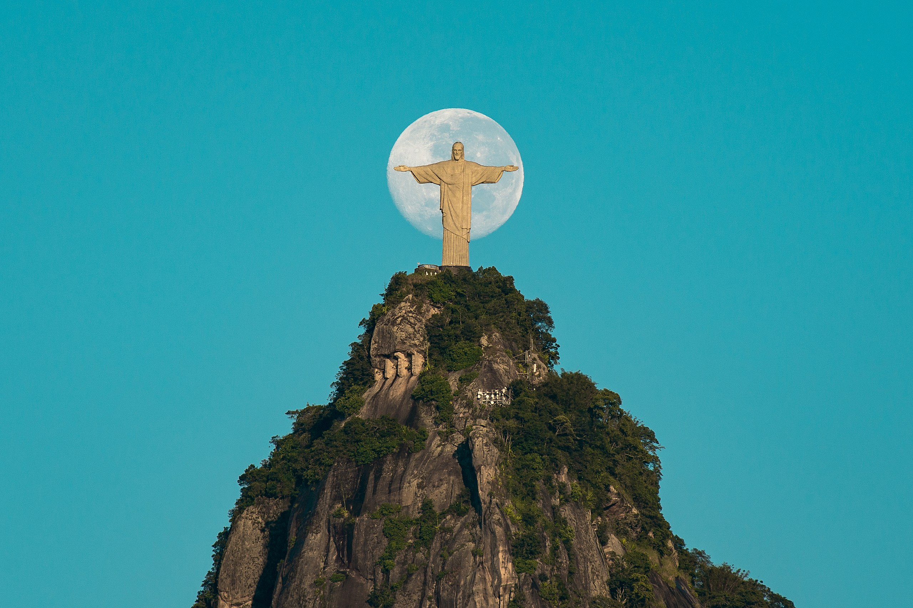
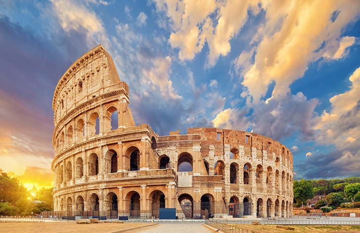
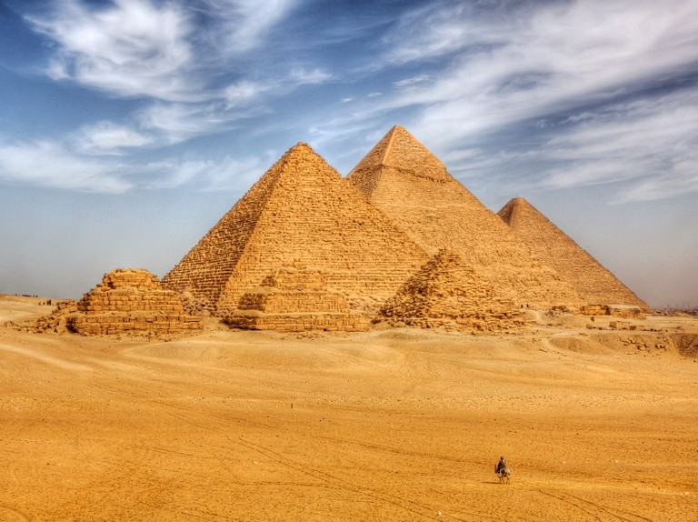
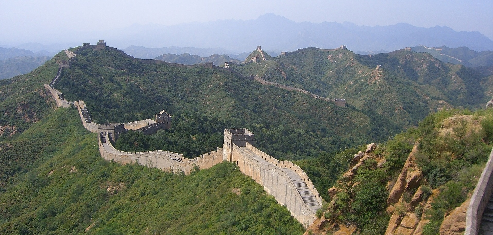
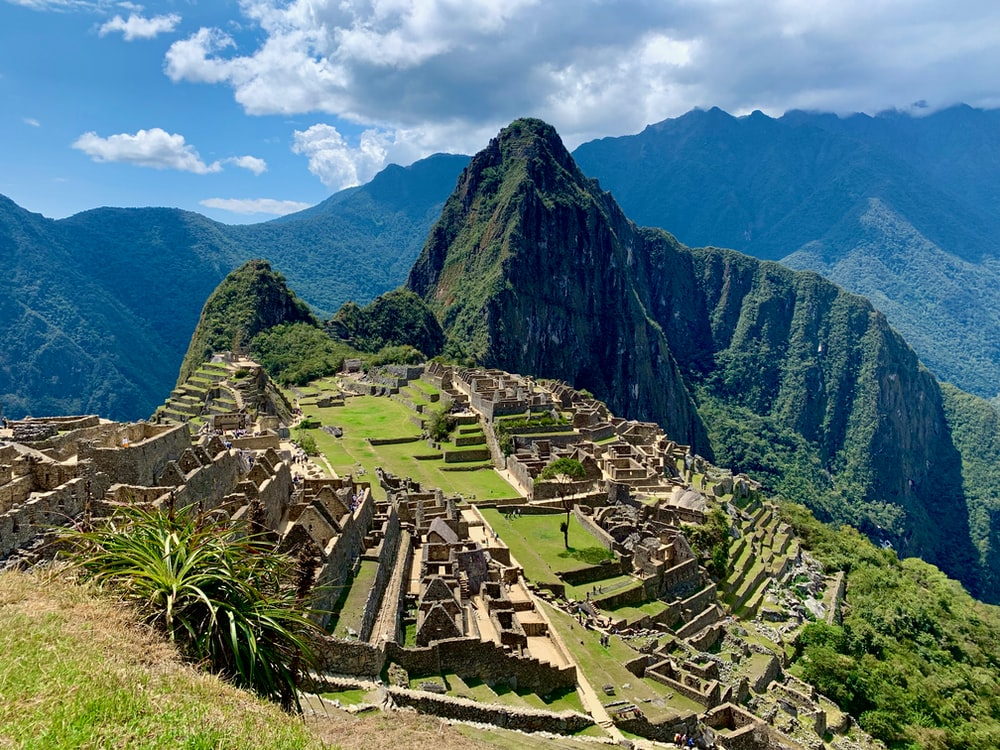
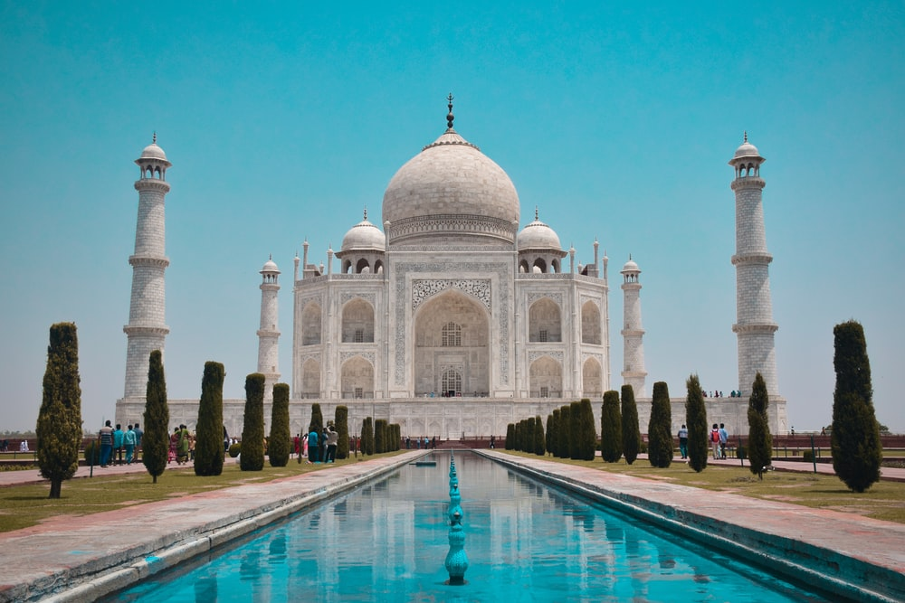

|
|---|
| Chichén Itzá |
| Mexico |
| Chichén Itzá is a complex of Mayan ruins on Mexico's Yucatán Peninsula. A massive step pyramid, known as El Castillo or Temple of Kukulcan, dominates the ancient city, which thrived from around 600 A.D. to the 1200s. Graphic stone carvings survive at structures like the ball court, Temple of the Warriors and the Wall of the Skulls. Nightly sound-and-light shows illuminate the buildings' sophisticated geometry. |
| Address: Yucatan, Mexico |
| Hours:
Sunday 8a.m.–4:30p.m. |
| Google map: https://mini.url/5kt0bmq |
|  |
|---|
| Christ the Redeemer |
| Rio de Janeiro - RJ, Brazil |
| Christ the Redeemer is an Art Deco statue of Jesus Christ in Rio de Janeiro, Brazil, created by French sculptor Paul Landowski and built by Brazilian engineer Heitor da Silva Costa, in collaboration with French engineer Albert Caquot. Romanian sculptor Gheorghe Leonida fashioned the face. |
| Locations: Rio de Janeiro, Brazil, Corcovado |
| Construction started: April 4, 1922 |
| Architects: Paul Landowski, Heitor da Silva Costa, Gheorghe Leonida, Albert Caquot |
| Architectural style: Gothic Revival architecture |
| Hours:
Sunday 8a.m.–7p.m. |
| Google map: https://mini.url/b7imjlu |
|  |
|---|
| Colosseum |
| Rome, Italy |
| The Colosseum is an oval amphitheatre in the centre of the city of Rome, Italy, just east of the Roman Forum. It is the largest ancient amphitheatre ever built, and is still the largest standing amphitheatre in the world today, despite its age. |
| Address: Piazza del Colosseo, 1, 00184 Roma RM, Italy |
| Built by: Titus, Domitian |
| Architectural style: Ancient Roman architecture |
| Height: 48 m |
| Hours:
Sunday 9a.m.–4:30p.m. |
| Google map: https://mini.url/ymrgn6f |
|  |
|---|
| The Great Pyramid of Giza |
| Egypt |
| The Great Pyramid of Giza is the oldest and largest of the pyramids in the Giza pyramid complex bordering present-day Giza in Greater Cairo, Egypt. It is the oldest of the Seven Wonders of the Ancient World, and the only one to remain largely intact. |
| Located in: Giza Necropolis |
| Height: 138 m |
| Materials: Limestone, Granite, Basalt, Mortar |
| Hours:
Sunday 8a.m.–5p.m. |
| Google map: https://mini.url/lkbhnl4 |
|  |
|---|
| Great Wall of China |
| China |
| The Great Wall of China is a series of fortifications that were built across the historical northern borders of ancient Chinese states and Imperial China as protection against various nomadic groups from the Eurasian Steppe. |
| Located in: Huairou District, China |
| Length: 21,196 km |
| Opened: 220 BC |
| Hours:
Monday 9a.m.–4:30p.m. |
| Google map: https://mini.url/9cd3fhn |
|  |
|---|
| Machu Picchu |
| Peru |
| Machu Picchu is an Incan citadel set high in the Andes Mountains in Peru, above the Urubamba River valley. Built in the 15th century and later abandoned, it’s renowned for its sophisticated dry-stone walls that fuse huge blocks without the use of mortar, intriguing buildings that play on astronomical alignments and panoramic views. Its exact former use remains a mystery. |
| Address: 08680, Peru |
| Archaeologists: Hiram Bingham |
| Google map: https://mini.url/zn0hi5c |
 |
|---|
| Petra |
| Jordan |
| Petra is a famous archaeological site in Jordan's southwestern desert. Dating to around 300 B.C., it was the capital of the Nabatean Kingdom. Accessed via a narrow canyon called Al Siq, it contains tombs and temples carved into pink sandstone cliffs, earning its nickname, the "Rose City." Perhaps its most famous structure is 45m-high Al Khazneh, a temple with an ornate, Greek-style facade, and known as The Treasury. |
| Elevation: 810 m (2,657 ft) |
| Area: 264 km2 (102 sq mi) |
| Built: Possibly as early as the 5th century BC |
| UNESCO World Heritage Site inscription: 1985 |
| Google map: https://mini.url/o2u4a6g |
|  |
|---|
| Taj Mahal |
| Mausoleum in Agra, India |
| The Taj Mahal, is an ivory-white marble mausoleum on the right bank of the river Yamuna in the Indian city of Agra. It was commissioned in 1632 by the Mughal emperor Shah Jahan to house the tomb of his favourite wife, Mumtaz Mahal; it also houses the tomb of Shah Jahan himself. |
| Architect: Ustad Ahmad Lahouri |
| Construction started: 1631 |
| Function: Monument, Mausoleum |
| Architectural style: Mughal architecture |
| Google map: https://mini.url/b2mk1t4h |